- 4.1.1.1. ポイント (Point)
- 4.1.1.2. ラインストリング (LineString)
- 4.1.1.3. リニアリング (LinearRing)
- 4.1.1.4. ポリゴン (Polygon)
- 4.1.1.5. マルチポイント (MultiPoint)
- 4.1.1.6. マルチラインストリング (MultiLineString)
- 4.1.1.7. マルチポリゴン (MultiPolygon)
- 4.1.1.8. ジオメトリコレクション (GeometryCollection)
- 4.1.1.9. 多面体サーフェス (PolyhedralSurface)
- 4.1.1.10. 三角形 (Triangle)
- 4.1.1.11. TIN
Open Geospatial Consortium (OGC)は、地理空間データのモデルを提供するためにSimple Features Access (SFA)標準を開発しました。これは、ジオメトリ (Geometry)の基本的な空間タイプを、空間解析処理実行のための操作や変換といった演算に沿って定義します。
ジオメトリは抽象的なタイプです。ジオメトリ値は複数ある具体的なサブタイプの一つに属します。サブタイプは様々な種類の様々な次元のジオメトリの形状を表現するものです。これらには原子的なタイプであるポイント (Point)、ラインストリング (LineString)、リニアリング (LinearRing)、ポリゴン (Polygon)があります。また、マルチポイント (MultiPoint)、マルチラインストリング (MultiLineString)、マルチポリゴン (MultiPolygon)、ジオメトリコレクション (GeometryCollection)のコレクション (collection) (訳注: 「マルチ系」と書いている場合があります)タイプがあります。 Simple Features Access - Part 1: Common architecture v1.2.1では多面体サーフェス (PolyhedralSurface)、三角形 (Triangle)、TINが追加されています。
ジオメトリは2次元デカルト平面上の形状をモデル化しています。多面体サーフェス、三角形、TINは3次元空間内の形状を表現することもできます。形状のサイズと位置は座標によって指定されます。それぞれの座標は、平面上で位置を判定するXとYの座標軸値を持っています。形状はポイントと線分から構築され、ポイントは単一の座標で定められ、線分は二つの座標値から定められます。
座標は任意軸ZとMを持つことができます。Z軸はしばしば標高を示すために使われます。M軸は計測値が入りますが、計測値は時間であったり距離であったりします。Z値またはM値はジオメトリ値の中にあり、ジオメトリの各ポイントで定義されているものです。ジオメトリがZ値またはM値を持っている場合には座標次元は三次元です。Z値とM値の両方を持っている場合には四次元です。
ジオメトリ値は、そのジオメトリが組み込まれている座標系を示す空間参照系に関連付けられます。空間参照系はジオメトリのSRID番号で識別されます。 X軸とY軸の単位は空間参照系によって決まります。平面参照系では伝統的にX座標値とY座標値が東、北をそれぞれ示します。地理参照系では、経度と緯度を表現しています。 SRIDが0の場合には、軸の単位が無い、無限の直交平面を表します。Section 4.5, “空間参照系”を参照して下さい。
ジオメトリの次元は、ジオメトリタイプのプロパティです。ポイントタイプは0次元、ラインタイプは1次元、ポリゴンタイプは2次元、コレクションは要素の次元の最大値、となります。
ジオメトリ値はemptyになることがあります。空値とは、非マルチ系ジオメトリの場合は頂点を持っていないという意味で、コレクションでは要素を持っていないという意味です。
ジオメトリ値の重要なプロパティは範囲 (extent)またはバウンディングボックス (bounding box)です。OGCモデルではエンベロープ (envelope)と呼ばれています。これは、ジオメトリの座標を囲む2次元または3次元のボックスです。ジオメトリの座標空間内の範囲を表現するための、また、二つのジオメトリの相互関係をチェックするための、効率の良い方法です。
ジオメトリモデルでは、Section 5.1.1, “Dimensionally Extended 9-Intersection Model”に示されている通り、トポロジ空間関係を評価することができます。これに対応するために、内部 (interior)、境界 (boundary)、外部 (exterior)の概念が、ジオメトリタイプ毎に定義されます。ジオメトリはトポロジ的に閉じていて、常に境界を持っています。境界の次元はジオメトリの次元より1小さくなります。
OGCジオメトリモデルは、ジオメトリタイプ毎に妥当性規則が定義されています。これらの規則によって、ジオメトリ値が現実的な状況を示すようになります (たとえば、外部に穴を持つポリゴンを指定できますが、ジオメトリ的に無意味であり、よって不正とします)。PostGISは不正なジオメトリ値を格納、操作することができます。これによって、必要なら修正できることになります。Section 4.4, “ジオメトリ検証”を参照して下さい。
ポイントは、座標空間内の一つの位置を表現する0次元ジオメトリです。
POINT (1 2) POINT Z (1 2 3) POINT ZM (1 2 3 4)
ラインストリングは連続する一連の線分で形成される1次元のラインです。線分はそれぞれ2点で定義付けられ、ある線分の終点は次の線分の始点を形成します。OGC妥当なラインストリングには、0または2以上のポイントがあります。ただしPostGISはラインストリングの一つのポイントを許容します。ラインストリングは、自身とクロスする場合があります (自己交差)。始端と終端とが同じ場合にはラインストリングは閉じたことになります。自己交差しない場合には、ラインストリングは単純です。
LINESTRING (1 2, 3 4, 5 6)
リニアリングは閉じていて、かつ単純なラインスリングです。始端と終端は同じでなければなりませんし、ラインは自己交差してはなりません。
LINEARRING (0 0 0, 4 0 0, 4 4 0, 0 4 0, 0 0 0)
ポリゴンは2次元平面領域です。一つの外側の境界 (殻)と0個以上の内の境界 (穴)とで区切られています。それぞれの境界はリニアリングです。
POLYGON ((0 0 0,4 0 0,4 4 0,0 4 0,0 0 0),(1 1 0,2 1 0,2 2 0,1 2 0,1 1 0))
マルチラインストリングはラインストリングのコレクションです。各要素が閉じている場合には、そのマルチラインストリングは閉じています。
MULTILINESTRING ( (0 0,1 1,1 2), (2 3,3 2,5 4) )
マルチポリゴンは相互にオーバラップも隣接もしていないポリゴンのコレクションです。コレクション内のポリゴンの接触は有限数のポイントでのみ可能です。
MULTIPOLYGON (((1 5, 5 5, 5 1, 1 1, 1 5)), ((6 5, 9 1, 6 1, 6 5)))
ジオメトリコレクションは、ジオメトリの異種 (混合)のコレクションです。
GEOMETRYCOLLECTION ( POINT(2 3), LINESTRING(2 3, 3 4))
多角形はサーフェスは、パッチまたはエッジを共有する面の隣接するコレクションです。それぞれのパッチは平面ポリゴンです。ポリゴンがZ値を持つ場合には、サーフェスは3次元になります。
POLYHEDRALSURFACE Z ( ((0 0 0, 0 0 1, 0 1 1, 0 1 0, 0 0 0)), ((0 0 0, 0 1 0, 1 1 0, 1 0 0, 0 0 0)), ((0 0 0, 1 0 0, 1 0 1, 0 0 1, 0 0 0)), ((1 1 0, 1 1 1, 1 0 1, 1 0 0, 1 1 0)), ((0 1 0, 0 1 1, 1 1 1, 1 1 0, 0 1 0)), ((0 0 1, 1 0 1, 1 1 1, 0 1 1, 0 0 1)) )
三角形は三つの異なる非共線頂点で定義されるポリゴンです。三角形はポリゴンですので、四つの座標で指定され、一つ目と四つ目は同じです。
TRIANGLE ((0 0, 0 9, 9 0, 0 0))
TINはTriangulated Irregular Networkを表現する、オーバラップしない三角形のコレクションです。
TIN Z ( ((0 0 0, 0 0 1, 0 1 0, 0 0 0)), ((0 0 0, 0 1 0, 1 1 0, 0 0 0)) )
ISO/IEC 13249-3 SQL Multimedia - Spatial標準 (SQL/MM) は、OGC SFAを拡張して、曲線ジオメトリを含むサブタイプを定義しています。SQL/MMタイプはXYM, XYZ, XYZMに対応します。
![[Note]](images/note.png) | |
SQL-MM実装での全ての浮動小数点数の比較では、所定の丸め誤差があります。現在は1E-8です。 |
曲線ストリングは、基本的な曲線タイプです。線形の世界のラインストリングに似ています。単一の円弧線分は、始点、終点 (1番目と3番目)、弧の他の点の三つの点で定義されます。閉じた円を指定するには、開始点と終了点を同じにし、中間点を対称点 (円弧の中心)に置きます。連続する円弧では、前の円弧の終端と次の円弧の始端とが同じです。よって曲線ストリングは1以上の奇数個のポイントを持つことになります。
CIRCULARSTRING(0 0, 1 1, 1 0) CIRCULARSTRING(0 0, 4 0, 4 4, 0 4, 0 0)
複合曲線は、曲線区間と直線区間の両方を含むことができる単一の連続した曲線です。このことは、整形された要素を持つことに加えて、全ての要素の最後のポイントは次の要素の最初のポイントでなければならないことを意味します。
COMPOUNDCURVE( CIRCULARSTRING(0 0, 1 1, 1 0),(1 0, 0 1))
曲線ポリゴンは、外側の輪がひとつで0以上の内側のリングがある点はポリゴンに似ています。違いは、ポリゴンのリングはラインストリングですが曲線ポリゴンのリングは曲線ストリングまたは複合ストリングである点です。
PostGIS 1.4から、PostGISで曲線ポリゴンで複合曲線をサポートするようになりました。
CURVEPOLYGON( CIRCULARSTRING(0 0, 4 0, 4 4, 0 4, 0 0), (1 1, 3 3, 3 1, 1 1) )
例: CIRCULARSTRINGとLINESTRINGからなるCOMPOUNDCURVEで定義される外殻を持ち、CIRCULARSTRINGで定義される穴を持つCURVEPOLYGON
CURVEPOLYGON(
COMPOUNDCURVE( CIRCULARSTRING(0 0,2 0, 2 1, 2 3, 4 3),
(4 3, 4 5, 1 4, 0 0)),
CIRCULARSTRING(1.7 1, 1.4 0.4, 1.6 0.4, 1.6 0.5, 1.7 1) )マルチ曲線は曲線のコレクションで、ラインストリング、曲線ストリング、複合曲線を含むことができます。
MULTICURVE( (0 0, 5 5), CIRCULARSTRING(4 0, 4 4, 8 4))
OGC SFA仕様では、ジオメトリ値を外部で使用するための表現として二つの標準書式が定義されています。Well-Known Text (WKT)とWell-Known Binary (WKB)です。WKTとWKBは両方ともそのオブジェクトを定義するタイプと座標に関する情報を含んでいます。
Well-Known Text (WKT)で空間データの標準的な文字表現が可能です。空間オブジェクトのWKT表現の例を次に挙げます。
POINT(0 0)
POINT Z (0 0 0)
POINT ZM (0 0 0 0)
POINT EMPTY
LINESTRING(0 0,1 1,1 2)
LINESTRING EMPTY
POLYGON((0 0,4 0,4 4,0 4,0 0),(1 1, 2 1, 2 2, 1 2,1 1))
MULTIPOINT((0 0),(1 2))
MULTIPOINT Z ((0 0 0),(1 2 3))
MULTIPOINT EMPTY
MULTILINESTRING((0 0,1 1,1 2),(2 3,3 2,5 4))
MULTIPOLYGON(((0 0,4 0,4 4,0 4,0 0),(1 1,2 1,2 2,1 2,1 1)), ((-1 -1,-1 -2,-2 -2,-2 -1,-1 -1)))
GEOMETRYCOLLECTION(POINT(2 3),LINESTRING(2 3,3 4))
GEOMETRYCOLLECTION EMPTY
WKTの入出力は関数ST_AsTextとST_GeomFromTextによって提供されます。
text WKT = ST_AsText(geometry); geometry = ST_GeomFromText(text WKT, SRID);
例えば、WKTとSRIDからの空間オブジェクトの生成と挿入のステートメントは次の通りです。
INSERT INTO geotable ( geom, name )
VALUES ( ST_GeomFromText('POINT(-126.4 45.32)', 312), 'A Place');Well-Known Binary (WKB)は、空間データのバイナリデータ (バイト列)で、移植可能かつ正確な表現です。空間オブジェクトのWKB表現を次に挙げます。
WKT: POINT(1 1)
WKB: 0101000000000000000000F03F000000000000F03
WKT: LINESTRING (2 2, 9 9)
WKB: 0102000000020000000000000000000040000000000000004000000000000022400000000000002240
WKBの入出力は関数ST_AsBinaryとST_GeomFromWKBが提供されています。次のように使います。
bytea WKB = ST_AsBinary(geometry); geometry = ST_GeomFromWKB(bytea WKB, SRID);
たとえば、WKBから空間オブジェクトの生成、挿入は次のようにします。
INSERT INTO geotable ( geom, name )
VALUES ( ST_GeomFromWKB('\x0101000000000000000000f03f000000000000f03f', 312), 'A Place');PostGISは、geometryというPostgreSQIデータ型を定義して、OGC Simple Features model を実装しています。これで、内部タイプコード (GeometryTypeとST_GeometryType参照)で全てのジオメトリのサブタイプを表現します。これにより、カラム型で定義されたテーブルの行として、空間地物をモデリングすることが可能となります。
geometryデータ型は透過です。ジオメトリ値に関する関数から全てにアクセスできることを意味します。関数によって、ジオメトリオブジェクトの生成、全ての内部フィールドへのアクセスと更新、新しいジオメトリ値の計算が可能です。PostGISは、OGC Simple feature access - Part 2: SQL option (SFS)仕様で定義されている全ての関数に、他の多数の関数とあわせて対応しています。関数の完全な一覧はChapter 8, PostGISリファレンスをご覧下さい。
| |
PostGISは、空間関数にプリフィクス"ST_"を付けて、SFA標準に従っています。これは、"Spatial and Temporal (空間と時間)"を示していますが、標準の時間の部分はまだ開発していません。その代わりに"Spatial Type (空間タイプ)"と解釈できます。 |
SFA標準は、空間オブジェクトは空間参照系識別子 (SRID)を含むと規程しています。SRIDは、空間オブジェクトをデータベースに挿入するために生成した時に求められます (デフォルトとして0になるかも知れません)。ST_SRIDとSection 4.5, “空間参照系”をご覧下さい。
ジオメトリのクエリを効率的にするため、PostGISでは様々な種類の空間インデクスを定義しています。詳細についてはSection 4.9, “空間インデックス”とSection 5.2, “空間インデックスを使う”をご覧下さい。
OGC SFA仕様は、まず2次元ジオメトリのみに対応しました。また、入出力表現にジオメトリのSRIDは取り入れていまません。OGC SFA仕様 1.2.1 (ISO 19125標準に準拠)では3次元 (XYZ)とM値 (XYMとXYZM)座標に対応するようになりましたが、SIRD値の取り込みは依然行われていません。
これらの制限のため、PostGISでは拡張書式であるEWKBとEWKTを定義しました。3次元 (XYZ, XYM)と4次元 (XYZN)座標系に対応し、SRID情報を取り込めるようにしました。すべてのジオメトリ情報を含めたので、PostGISはEWKBを格納用書式 (DUMPファイル等)として使えるようになりました。
PostGISデータオブジェクトの「カノニカルな形式」のためにEWKBとEWKTを使います。入力では、バイナリデータのカノニカルな形式はEWKB、テキストデータについてはEWKBかEWKTが受け付けられます。これにより、HEXEWKBまたはEWKTのテキスト値から::geometryを使用してキャストを行い、ジオメトリ値が生成できるようになりました。出力では、バイナリのカノニカルな形式はEWKBで、テキストはHEXEWKB (HEXエンコードを施したEWKB)です。
たとえば、この手続きでは、EWKTテキスト値からのキャストでジオメトリを生成して、HEXWKBのカノニカルな形式を使った出力を行います。
SELECT 'SRID=4;POINT(0 0)'::geometry; geometry ---------------------------------------------------- 01010000200400000000000000000000000000000000000000
PostGIS EWKT出力はOGC WKTと次の通り相違点があります。
XYZジオメトリでZ修飾子が省略されます。
OGC: POINT Z (1 2 3)
EWKT: POINT (1 2 3)
M値を含むXYMジオメトリ:
OGC: POINT M (1 2 3)
EWKT: POINTM (1 2 3)
4次元ジオメトリでZM修飾子を省略:
OGC: POINT ZM (1 2 3 4)
EWKT: POINT (1 2 3 4)
EWKTは、次のようにOGC/ISO書式で発生しうる過剰次元と不整合を回避しています。
POINT ZM (1 1)
POINT ZM (1 1 1)
POINT (1 1 1 1)
![[Caution]](images/caution.png) | |
PostGISの拡張書式はOGC書式の上位互換であり、全ての妥当なOGC WKB/WKTは妥当なEWKB/EWKTでもあります。しかし、OGCがPostGISの定義と衝突する方法で書式を拡張した場合には、将来的に書式を変更する可能性があります。ゆえに、この互換性に*頼るべきではありません*。 |
空間オブジェクトのEWKTテキスト表現の例:
POINT(0 0 0) -- XYZ
SRID=32632;POINT(0 0) -- SRID付きXY
POINTM(0 0 0) -- XYM
POINT(0 0 0 0) -- XYZM
SRID=4326;MULTIPOINTM(0 0 0,1 2 1) -- SRID付きXYM
MULTILINESTRING((0 0 0,1 1 0,1 2 1),(2 3 1,3 2 1,5 4 1))
POLYGON((0 0 0,4 0 0,4 4 0,0 4 0,0 0 0),(1 1 0,2 1 0,2 2 0,1 2 0,1 1 0))
MULTIPOLYGON(((0 0 0,4 0 0,4 4 0,0 4 0,0 0 0),(1 1 0,2 1 0,2 2 0,1 2 0,1 1 0)),((-1 -1 0,-1 -2 0,-2 -2 0,-2 -1 0,-1 -1 0)))
GEOMETRYCOLLECTIONM( POINTM(2 3 9), LINESTRINGM(2 3 4, 3 4 5) )
MULTICURVE( (0 0, 5 5), CIRCULARSTRING(4 0, 4 4, 8 4) )
POLYHEDRALSURFACE( ((0 0 0, 0 0 1, 0 1 1, 0 1 0, 0 0 0)), ((0 0 0, 0 1 0, 1 1 0, 1 0 0, 0 0 0)), ((0 0 0, 1 0 0, 1 0 1, 0 0 1, 0 0 0)), ((1 1 0, 1 1 1, 1 0 1, 1 0 0, 1 1 0)), ((0 1 0, 0 1 1, 1 1 1, 1 1 0, 0 1 0)), ((0 0 1, 1 0 1, 1 1 1, 0 1 1, 0 0 1)) )
TRIANGLE ((0 0, 0 10, 10 0, 0 0))
TIN( ((0 0 0, 0 0 1, 0 1 0, 0 0 0)), ((0 0 0, 0 1 0, 1 1 0, 0 0 0)) )
これらの書式を使う入出力は次の関数を使うと有効です。
バイト配列 EWKB = ST_AsEWKB(geometry); テキスト EWKT = ST_AsEWKT(geometry); ジオメトリ = ST_GeomFromEWKB(bytea EWKB); ジオメトリ = ST_GeomFromEWKT(text EWKT);
たとえば、EWKTを使ってPostGISの空間オブジェクトを作成し挿入するステートメントは次の通りです。
INSERT INTO geotable ( geom, name )
VALUES ( ST_GeomFromEWKT('SRID=312;POINTM(-126.4 45.32 15)'), 'A Place' )geographyデータタイプによって地理座標 ("geographic", "geodetic", "lat/lon", "lon/lat"など)上の空間地物表現にネイティブに対応できます。地理座標系は角度 (度)単位で表現される球面座標系です。
PostGISジオメトリ型の基礎は平面です。平面上の2点間の最短経路は直線です。ジオメトリに関する関数 (面積、距離、長さ、インタセクション等)は直線ベクトルとデカルト平面を使って計算しています。これで実装が簡単になり実行速度も上がりますが、地球の球面の上にあるデータについては不正確になります。
PostGISジオグラフィというデータ型は球面モデルに基づいています。球面上の2点の最短経路は大円の弧にあたります。ジオグラフィの関数 (面積、距離、長さ、インタセクション等)は球面上の弧を使います。球面上の世界の形状を考慮に入れるので、より正確な結果が得られます。
基礎となる数学はより複雑になるため、ジオグラフィ型で定義された関数はジオメトリ型で定義された関数よりも少なくなります。時間が経つにつれて新しいアルゴリズムが追加されて、ジオグラフィの機能が拡大していきます。回避策として、ジオメトリ型とジオグラフィ型との相互変換が可能です。
ジオグラフィ型は、ジオメトリ型のように、空間参照系識別子 (SRID)を介して空間参照系と関連付けられます。spatial_ref_sysテーブルで定義されているあらゆる地理空間参照系 (経度/緯度を使う)が使えます (PostGIS 2.2より前ではジオグラフィ型はWGS 84地理座標系 (SRID:4326)にのみ対応していました)。Section 4.5.2, “ユーザ定義空間参照系”に書いている通り、独自の空間参照系を追加することもできます。
計測関数 (例 ST_Distance、ST_Length、ST_Perimeter、ST_Area)によって返されるものの単位と、ST_DWithinの引数で与えられる距離との、空間参照系の単位は、メートルです。
ジオグラフィデータを格納するテーブルは、SQLステートメントCREATE TABLEにgeography型のカラムを付けることで生成することができます。2次元ラインストリングをWGS84地理座標系 (SRID 4326)で保存するジオグラフィカラムを持つテーブルを生成する例を次に示します。
CREATE TABLE global_points (
id SERIAL PRIMARY KEY,
name VARCHAR(64),
location geography(POINT,4326)
);二つの任意の型修飾子に対応するジオグラフィ型:
空間の型修飾子は、カラム内で許される形状の種類や次元を規制します。値によって空間型はPOINT、LINESTRING、POLYGON、MULTIPOINT、MULTILINESTRING、MULTIPOLYGON、GEOMETRYCOLLECTIONが可能です。ジオグラフィ型は曲線や三角形、多面体サーフェスに対応していません。型修飾子に後置詞Z、M、ZMを付けることで、座標次元の制約に対応しています。たとえば、'LINESTRINGM'は、3次元で3番目の軸はMであるラインストリングのみを許します。同様に'POINTZM'では4次元 (XYZM)データが求められます。
SRID修飾子は空間参照系(SRID)を特定の数値になるよう制約します。省略した場合には、デフォルトは4326 (WGS84地理座標系)となり、全ての計算はWGS84を使ったものになります。
ジオグラフィカラムを持つテーブルの生成の例を次に挙げます。
SRIDがデフォルトの4326 (WGS84 経度/緯度)である2次元ポイントジオグラフィを持つテーブルの生成:
CREATE TABLE ptgeogwgs(gid serial PRIMARY KEY, geog geography(POINT) );
NAD83緯度/経度の2次元ポイントジオグラフィを持つテーブルの生成:
CREATE TABLE ptgeognad83(gid serial PRIMARY KEY, geog geography(POINT,4269) );
SRIDを4326で明示した3次元 (XYZ)ポイントジオグラフィを持つテーブルの生成:
CREATE TABLE ptzgeogwgs84(gid serial PRIMARY KEY, geog geography(POINTZ,4326) );
SRIDがデフォルトの4326である2次元ラインストリングジオグラフィを持つテーブルの生成:
CREATE TABLE lgeog(gid serial PRIMARY KEY, geog geography(LINESTRING) );
SRIDがデ4326 (NAD 1927 経度/緯度)である2次元ポリゴンジオグラフィを持つテーブルの生成:
CREATE TABLE lgeognad27(gid serial PRIMARY KEY, geog geography(POLYGON,4267) );
ジオグラフィカラムはgeography_columnsシステムビューに登録されます。geography_columnsビューにクエリを出してテーブルを見るには、次の通りにします。
SELECT * FROM geography_columns;
空間インデックスはジオメトリカラムと同じように機能します。PostGISは、カラム型がジオグラフィであると通知したうえで、ジオメトリに使う通常の平面用インデックスでなく、球面を基にした適切なインデックスを生成します。
-- testテーブルに球面インデックスを作成 CREATE INDEX global_points_gix ON global_points USING GIST ( location );
ジオメトリと同じ方法でジオグラフィテーブルにデータを挿入できます。ジオメトリデータは、SRID 4326の場合には、ジオグラフィ型に自動キャストされます。EWKTとEWKB書式はジオグラフィ値を指定するために使うことができます。
-- testテーブルにデータを追加する
INSERT INTO global_points (name, location) VALUES ('Town', 'SRID=4326;POINT(-110 30)');
INSERT INTO global_points (name, location) VALUES ('Forest', 'SRID=4326;POINT(-109 29)');
INSERT INTO global_points (name, location) VALUES ('London', 'SRID=4326;POINT(0 49)');
spatial_ref_sysテーブルにある地理 (経度/緯度)参照系は、ジオグラフィのSRIDとして指定することができます。非地理座標系を使うとエラーが発生します。
-- NAD 83 経度/緯度
SELECT 'SRID=4269;POINT(-123 34)'::geography;
geography
----------------------------------------------------
0101000020AD1000000000000000C05EC00000000000004140
-- NAD27 経度/緯度
SELECT 'SRID=4267;POINT(-123 34)'::geography;
geography
----------------------------------------------------
0101000020AB1000000000000000C05EC00000000000004140
-- NAD83 UTM zone メートル単位 - メートル単位の平面投影法なのでエラーが発生します SELECT 'SRID=26910;POINT(-123 34)'::geography; ERROR: Only lon/lat coordinate systems are supported in geography.
クエリと計測関数はメートル単位となります。そのため距離パラメータはメートル (面積の場合は平方メートル)単位となります。
-- 1000km範囲の距離に関するクエリ SELECT name FROM global_points WHERE ST_DWithin(location, 'SRID=4326;POINT(-110 29)'::geography, 1000000);
シアトルからロンドンへの (LINESTRING(-122.33 47.606, 0.0 51.5))大円航路を行く航空機がレイキャビク (POINT(-21.96 64.15)) にどれだけ近づくかを計算することで、ジオグラフィの力を見ことができます (航路の地図表示)。
ジオグラフィ型は、レイキャビクとシアトル－ロンドン間の大円航路との距離について、球面上で122.235 kmという本当の最短距離を計算します。
-- GEOGRAPHYを使った距離計算
SELECT ST_Distance('LINESTRING(-122.33 47.606, 0.0 51.5)'::geography, 'POINT(-21.96 64.15)'::geography);
st_distance
-----------------
122235.23815667ジオメトリ型では、平面の世界地図上で見て、レイキャビクとシアトル－ロンドン間の直線とのデカルト距離が計算され、意味がありません。計算結果の名目上の単位は「度」ですが、点間の本当の角度差に応じるものではなく、「度」と呼ぶこと自体が不正確です。
-- GEOMETRYを使った距離計算
SELECT ST_Distance('LINESTRING(-122.33 47.606, 0.0 51.5)'::geometry, 'POINT(-21.96 64.15)'::geometry);
st_distance
--------------------
13.342271221453624
ジオグラフィ型によって、経度緯度座標でデータを格納できるようになりましたが、ジオグラフィで定義されている関数が、ジオメトリより少ないのと、実行にCPU時間がかかる、というところが犠牲になっています。
選択した型が、期待する領域から出ないことを、ジオメトリ型にして使用する条件とすべきです。使用するデータは地球全体か、大陸か、州か、自治体か?
データが小さいエリア内におさまるなら、適切な投影を選択してジオメトリを使うのが、効率面でも機能面でも最も良い方法です。
データが地球全体か大陸なら、ジオグラフィで投影法の細かい問題を気にせずにシステムを構築できるでしょう。経度/緯度のデータを保存して、ジオグラフィで定義された関数使います。
投影法を理解していなくて、学習したくもなくて、かつ、ジオグラフィで使える関数が限られていることを受け入れるのなら、ジオグラフィを使った方が簡単です。単純にデータを経度/緯度でロードして、そこから進めて下さい。
ジオグラフィとジオメトリ間のサポート状況の比較についてはSection 15.11, “PostGIS関数対応マトリクス”をご覧下さい。ジオグラフィ関数の簡潔なリストと説明についてはSection 15.4, “PostGISジオグラフィ対応関数”をご覧下さい。
- 4.3.4.1. 球または回転楕円体のどちらで計算するのでしょうか?
- 4.3.4.2. 日付変更線や極に関してはどうなっていますか?
- 4.3.4.3. 処理できる最も長い弧はどうなりますか?
- 4.3.4.4. なぜヨーロッパやロシアといった大きな範囲の面積計算はとても遅いのですか?
4.3.4.1. | 球または回転楕円体のどちらで計算するのでしょうか? |
デフォルトでは、全ての距離と面積の計算は回転楕円体で行います。局所的なエリアでの計算結果と良好な投影を施した平面での結果と比較して下さい。大きなエリアの場合は、回転楕円体計算は、投影平面上でのどの計算よりも精度が高くなります。 全てのジオグラフィ関数には、最後の真偽パラメータを'FALSE'にすると球面を使った計算を行うというオプションがあります。これは、特にジオメトリが非常に単純である場合に計算を速くするためのものです。 | |
4.3.4.2. | 日付変更線や極に関してはどうなっていますか? |
全ての計算に日付変更線や極の概念がありません。座標は球 (経度/緯度)であるので、日付変更線とクロスする形状は、計算の観点からは、他のものと変わりありません。 | |
4.3.4.3. | 処理できる最も長い弧はどうなりますか? |
大圏の弧を2点の「補完線」として使用しています。任意の2点は、実際には2方向につながっていて、どちらの方向に行くかに依存します。PostGISの全てのコードは、大圏コースの2コースのうち*短い*方でつながっていると仮定しています。結果として、180度以上の弧を持つ形状は正しくモデル化されません。 | |
4.3.4.4. | なぜヨーロッパやロシアといった大きな範囲の面積計算はとても遅いのですか? |
ポリゴンがとんでもなく大きいからです。二つの理由から、大きなエリアは悪いです。一つは、バウンダリボックスが大きいため、どのようなクエリを走らせても、インデックスがフィーチャーを引っ張ってくる傾向にあるためです。もう一つは、頂点数が巨大で、テスト (距離、包含)関数では、少なくとも1回、通常はN (Nは、もう一方のフィーチャーの頂点数)回、頂点を横断しなければならないためです。 ジオメトリでは、大きなポリゴンを持っているけれども小さな範囲のクエリを実行する時、ジオメトリデータ情報を小片に「非正規化」します。これにより、インデックスが効果的にオブジェクトの一部を問い合わせるようになり、またクエリが常にオブジェクト全体を引っ張りこむようなことがないようになります。ST_Subdivideを参照して下さい。ヨーロッパ全体を一つのポリゴンに*格納できる*からといって、*そうすべき*だというわけではありません。 |
PostGISはOpen Geospatial Consortium (OGC)のSimple Feature Specificationに準拠しています。この標準では、単純なジオメトリと妥当なジオメトリの概念が定義されています。これらの定義によって、Simple Featureのジオメトリモデルが一貫性があって、かつ明確な方法で空間オブジェクトを表現することができ、効率的な計算を助けます (OGC Simple FeatureとSQL/MMとにおいては、単純性と妥当性について同じ定義です)。
単純なジオメトリは、自己交差や自己接触といった異常な幾何学上のポイントを持たないジオメトリです。
POINTは0次元ジオメトリオブジェクトとして常に単純です。
MULTIPOINTは、二つの座標値 (POINT)が同じでないなら単純です。
LINESTRINGは、同じポイントを二回通過しないものが単純です。単純なラインストリングの端点が同一の場合には、閉じているとされ、線形リングと呼ばれます。
(a)と(c)は単純な |
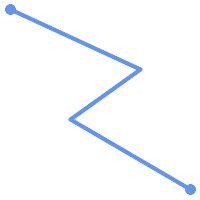 (a) | (b) |
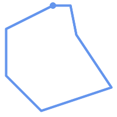 (c) | (d) |
MULTILINESTRINGは、要素が全て単純で、かつ、全ての要素同士のインタセクションが要素の境界上でのみ出現する場合には、単純です。
(e)と(f)は単純な |
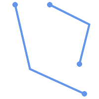 (e) | 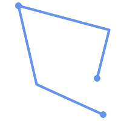 (f) | 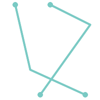 (g) |
POLYGONは線形リングから形成されるので、妥当なポリゴンジオメトリは常に単純です。
ジオメトリが単純かどうかを試すにはST_IsSimple関数を使います。次のようにします。
SELECT
ST_IsSimple('LINESTRING(0 0, 100 100)') AS straight,
ST_IsSimple('LINESTRING(0 0, 100 100, 100 0, 0 100)') AS crossing;
straight | crossing
----------+----------
t | f
一般的にPostGIS関数は引数ジオメトリの単純性を求めていません。単純性は主にジオメトリの妥当性を定義するための基礎として用いられます。空間データモデルによっては要件としていることもあります (たとえば、線形ネットワークはしばしばクロスを認めません)。マルチポイントと線形ジオメトリはST_UnaryUnionを使って単純にできます。
ジオメトリの妥当性は主に2次元ジオメトリ (POLYGONとMULTIPOLYGON)に適用されます。妥当性はポリゴンジオメトリが平面領域を明確にモデル化できる規則によって定義されます。
POLYGONは次の条件では妥当です。
ポリゴン境界リング (外側の殻リングと内側の穴リング)が単純 (交差も自己接触もしていない)であること。これによりポリゴンは切断線、トゲ、循環を持つことができなくなります。これは、ポリゴンの穴を外側のリングの自己接触 (いわゆる "inverted hole" (逆穴))でなく、内側のリングとして表現されなけれならないことを意味します。
境界リングがクロスしないこと
境界リングは点で接触してもいいですが、接点としてでなければなりません (線上にあってはなりません)。
内側リングは外側リング内にあること
ポリゴン内部は単純に接続されています (リングはポリゴンを複数に分割するように接触してはなりません)。
(h)と(i)は妥当な |
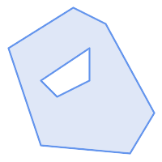 (h) | 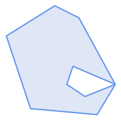 (i) | 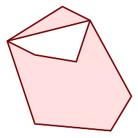 (j) |
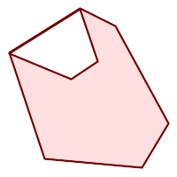 (k) | 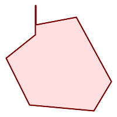 (l) | 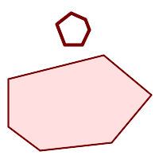 (m) |
MULTIPOLYGONは次の条件では妥当です。
要素となる
POLYGONが妥当であること要素がオーバラップしない (内部同士がインタセクトしない)こと
要素同士の接触が点でけである (線に沿って接触しない)こと
(n)は妥当な |
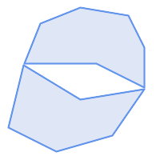 (n) | 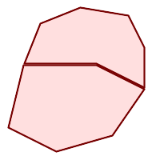 (o) | 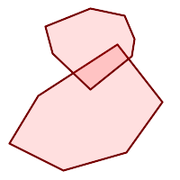 (p) |
これらの規則は妥当なポリゴンジオメトリも単純であることも示しています。
線ジオメトリについては、LINESTRINGが少なくとも二つのポイントを持ち、長さが0でない (少なくとも二つの異なるポイントを持つことと同じ)、というのが唯一の妥当性規則です。単純でない (自己交差がある)ラインは妥当です。
SELECT
ST_IsValid('LINESTRING(0 0, 1 1)') AS len_nonzero,
ST_IsValid('LINESTRING(0 0, 0 0, 0 0)') AS len_zero,
ST_IsValid('LINESTRING(10 10, 150 150, 180 50, 20 130)') AS self_int;
len_nonzero | len_zero | self_int
-------------+----------+----------
t | f | t
POINTとMULTIPOINTは妥当性規則を持っていません。
PostGISは妥当なジオメトリも不正なジオメトリも、生成も格納もできます。このため、不正なジオメトリを検出し、フラグを付け、訂正することができます。OGC妥当性規則が求める規則 (長さが0のラインストリングや逆穴を持つポリゴン等)よりも厳格であることもあります。
PostGISが提供する関数の多くは、引数ジオメトリが妥当であるとの仮定によっています。たとえば、ポリゴンの外部に穴があるポリゴンの面積を計算しても意味がありませんし、単純でない境界線からポリゴンを形成するのも意味がありません。妥当なジオメトリ入力を仮定することで、トポロジ的に正しいことを確認する必要がなくなるので、関数がより効率的に動作することができます (例外として、長さ0のラインと反転したポリゴンは一般的に正しく取り扱われます)。また、ほとんどのPostGIS関数は、入力ジオメトリが妥当な場合には、妥当なジオメトリ出力を生成します。これにより、PostGIS関数を安全に連鎖させられます。
PostGIS関数を呼ぶときに予期しないエラーメッセージ ("GEOS Intersection() threw an error!"等)に遭遇する場合には、まず関数の引数が妥当かどうかを確認します。妥当でないなら、次に示す方法のいずれかによる、処理中のデータの妥当性の確認を検討して下さい。
| |
関数が妥当な入力でエラーを報告する場合には、PostGISまたは使用しているライブラリの一つの中にエラーがあるのを発見することがありますが、その際はPostGISプロジェクトに報告して下さい。PostGIS関数が妥当な入力から不正なジオメトリを返す場合も同様です。 |
ジオメトリが妥当かをテストするにはST_IsValid関数を使います。次のようにします。
SELECT ST_IsValid('POLYGON ((20 180, 180 180, 180 20, 20 20, 20 180))');
-----------------
t
ジオメトリの不正性の性質と位置に関する情報はST_IsValidDetail関数で得られます。次のようにします。
SELECT valid, reason, ST_AsText(location) AS location
FROM ST_IsValidDetail('POLYGON ((20 20, 120 190, 50 190, 170 50, 20 20))') AS t;
valid | reason | location
-------+-------------------+---------------------------------------------
f | Self-intersection | POINT(91.51162790697674 141.56976744186045)
不正なジオメトリを自動的に訂正することが望ましいような状況があります。その際はST_MakeValid関数を使います (ST_MakeValidは不正な入力を許す特別な関数です)。
複雑なジオメトリの不正性テストには多大なCPU時間を取ることになるため、デフォルトでは、ジオメトリのロード時にPostGISは妥当性の確認をしません。データソースが信用できない場合には、チェック制約を使って、テーブル上で妥当性を強制的に確認することができます。次のようにします。
ALTER TABLE mytable
ADD CONSTRAINT geometry_valid_check
CHECK (ST_IsValid(geom));空間参照系 (Spatial Reference System, SRS) (座標参照系、Coordinate Reference System, CRSとも呼ばれます)は、ジオメトリが地表上の位置をどのように参照するかを定義しています。SRSには次の通り三種あります。
測地 (geodetic) 空間参照系は、地表に直接対応付けられる極座標系 (経度と緯度)を使います。
投影 (projected)空間参照系は、回転楕円体面を「平面にする」ための数学的な投影変換を使います。距離、面積、角度といった量を直接計測することが可能な位置座標系です。この座標系はデカルト座標系ですので、原点と二つの直交軸 (通常は来北と東方向)が定義されています。個々の投影座標系は、定まった距離単位 (通常はメートルかフィート)を使います。投影座標系は、歪みを避けて定義された座標範囲に納めるために、適応範囲を制限してもいいことになっています。
局所 (local)座標系は、地表への参照がないデカルト座標系です。PostGISではSRID値を0に指定します。
使用されている空間参照系には多数の相違点があります。一般的空間参照系は欧州石油調査グループ (European Petroleum Survey Group)のEPSG databaseで標準化されています。利便性向上のためPostGIS (と多くの空間系)はSRIDと呼ぶ整数を使って空間参照系の定義を参照します。
ジオメトリは、SRID値で空間参照系に関連付けられています。SRID値の取得にはST_SRIDを使います。ジオメトリのSRIDの設定にはST_SetSRIDを使います。ジオメトリ構築関数の中には、SRIDを与えられるものもあります (ST_PointやST_MakeEnvelope等)。EWKT書式はSRID=n;を前置することでSRIDに対応できます。
二つのジオメトリを処理する空間関数 (オーバレイ関数や空間関係関数等)では、入力ジオメトリが同じ空間参照系でなければなりません (同じSRID値を持たなければなりません)。ジオメトリデータはST_Transformを使うと異なる空間参照系に変換できます。関数から返されるジオメトリは入力ジオメトリと同じ空間参照系を持ちます。
PostGISが使用するSPATIAL_REF_SYSテーブルは利用可能な空間参照系を定義するOGC準拠のデータベーステーブルです。このテーブルは、数値でSRIDを持ち、文字列で座標系の記述を持っています。
spatial_ref_sysの定義は次の通りです。
CREATE TABLE spatial_ref_sys ( srid INTEGER NOT NULL PRIMARY KEY, auth_name VARCHAR(256), auth_srid INTEGER, srtext VARCHAR(2048), proj4text VARCHAR(2048) )
カラムは次の通りです。
- srid
データベース内のSpatial Reference System (SRS, 空間参照系)で一意に識別される整数コードです。
- auth_name
この参照系に引用されている標準の名前もしくは標準そのものです。たとえば「EPSG」は妥当な
auth_nameです。- auth_srid
空間参照系のIDは
auth_nameに引用される機関によって定義されます。ここがEPSGの場合には、これはEPSGコードです。- srtext
空間参照系のWell-Knownテキスト表現です。たとえば、WKT SRSの表現は、次のようになります。
PROJCS["NAD83 / UTM Zone 10N", GEOGCS["NAD83", DATUM["North_American_Datum_1983", SPHEROID["GRS 1980",6378137,298.257222101] ], PRIMEM["Greenwich",0], UNIT["degree",0.0174532925199433] ], PROJECTION["Transverse_Mercator"], PARAMETER["latitude_of_origin",0], PARAMETER["central_meridian",-123], PARAMETER["scale_factor",0.9996], PARAMETER["false_easting",500000], PARAMETER["false_northing",0], UNIT["metre",1] ]SRS WKTの詳細については、OGC標準のWell-known text representation of coordinate reference systemsをご覧下さい。
- proj4text
PostGISは座標変換機能を提供するためにProj4ライブラリを用いています。
proj4textカラムには、特定のSRIDを示すProj4座標定義文字列が入ります。たとえば次のようになります。+proj=utm +zone=10 +ellps=clrk66 +datum=NAD27 +units=m
詳細情報についてはPROJウェブサイトをご覧下さい。
spatial_ref_sys.sqlファイルには、全てのEPSG投影について、srtextとproj4textの定義があります。
投影変換で空間参照系の定義を使用する場合には、次の戦略を取ります。
auth_nameとauth_sridがある (NULLでない)場合には、これに基づいてPROJSRSを使います (存在する場合)。srtextがある場合には、可能ならそれを使用してSRSを生成します。proj4textがある場合には、可能ならこれを使用してSRSを生成します。
PostGISspatial_ref_sysテーブルにはPROJ投影ライブラリで処理される最も一般的な空間参照系定義3000件以上があります。しかし、そこに無い多くの座標系があります。空間参照系に関する必要な情報がある場合は、SRS定義をテーブルに追加できます。PROJに詳しいなら独自の空間参照系を定義することもできます。ほとんどの空間参照系は地域的なものであり、目的の範囲外で使用する場合は意味を持たない点に注意してください。
PostGISのコアセットに入っていない空間参照系を探すための素晴らしい資料がhttp://spatialreference.org/にあります。
一般的に使用される空間参照系には4326 - WGS 84経度緯度、4269 - NAD 83 経度緯度、3395 - WGS 84 メルカトル、2163 - 米国ナショナルアトラス正積図法、60個のWGS84 UTMゾーンがあります。UTMゾーンは計測に最適ですが、6度 (訳注: 経度)の領域のみをカバーします (対象地域に使用するUTMゾーンを決定するにはutmzone PostGIS plpgsql helper functionを参照してください)。
米国の州では、州平面空間参照系 (メートルまたはフィート単位)を使用します。この空間参照系は州ごとに一つか二つ存在します。ほとんどのメートル単位のものはコアのセットに存在しますが、フィート単位の多数のものやESRIが作成したものはspatialreference.orgからロードする必要があります。
地球外の座標系でさえも定義することができます。たとえばMars 2000です。この火星の座標系は非平面 (回転楕円体の度)ですが、geography型で、度でなくメートル単位で長さや近接測定値を取得することができます。
割当外のSRIDとPROJ定義を使って米国中央のランベルト正角円錐図法の独自座標系をロードする例を次に示します。
INSERT INTO spatial_ref_sys (srid, proj4text) VALUES ( 990000, '+proj=lcc +lon_0=-95 +lat_0=25 +lat_1=25 +lat_2=25 +x_0=0 +y_0=0 +datum=WGS84 +units=m +no_defs' );
geometry型のカラムを付けたCREATE TABLE SQLステートメントでジオメトリデータを保存するテーブルを生成することができます。次の例では、BC-アルベルス座標系 (SRID 3005)の2次元 (XY)ラインストリングを保存するジオメトリカラムを持つテーブルを生成します。
CREATE TABLE roads (
id SERIAL PRIMARY KEY,
name VARCHAR(64),
geom geometry(LINESTRING,3005)
);geometry型は、次の通り、二つの任意指定型修飾子に対応しています。
空間タイプ修飾子はカラムで許される形状と次元の種類を制約するものです。値は、対応しているジオメトリタイプ (POINT, LINESTRING, POLYGON, MULTIPOINT, MULTILINESTRING, MULTIPOLYGON, GEOMETRYCOLLECTION等)なら全て可能です。空間タイプ修飾子は、後置詞 Z, M, ZMを付け加えることで座標次元の制約に対応します。例えば、`LINESTRINGM`修飾子では、3次元で3番目がM軸となるラインストリングだけを許します。同様に、'POINTZM'では4次元 (XYZM)データが求められます。
SRID修飾子は空間参照系のSRIDを特定の数値に制約します。省略した場合には、デフォルトは0となります。 restricts the spatial reference system SRID to a particular number. If omitted, the SRID defaults to 0.
ジオグラフィカラムを持つテーブルの生成の例を次に挙げます。
デフォルトSRIDであらゆる種類のジオメトリを保持するテーブルの生成:
CREATE TABLE geoms(gid serial PRIMARY KEY, geom geometry );
2次元ポイントでSRIDがデフォルトのテーブル作成:
CREATE TABLE pts(gid serial PRIMARY KEY, geom geometry(POINT) );
3次元 (XYZ)ポイントでSRIDが3005のテーブル作成:
CREATE TABLE pts(gid serial PRIMARY KEY, geom geometry(POINTZ,3005) );
4次元 (XYZM)ラインストリングでSRIDがデフォルトのテーブル作成:
CREATE TABLE lines(gid serial PRIMARY KEY, geom geometry(LINESTRINGZM) );
2次元ポリゴンでSRIDが4276 (NAD 1927地理座標系)のテーブル作成:
CREATE TABLE polys(gid serial PRIMARY KEY, geom geometry(POLYGON,4267) );
一つのテーブルが一つ以上のジオメトリカラムを持つことができます。テーブル生成時に指定するか、ALTER TABLE SQLステートメントを使って追加するかで実現できます。次に3次元ラインストリングを格納するカラムを追加する例を示します。
ALTER TABLE roads ADD COLUMN geom2 geometry(LINESTRINGZ,4326);
OGC Simple Features Specification for SQLは、ジオメトリテーブル構造を記述するためのGEOMETRY_COLUMNSメタデータテーブルを定義しています。PostGISではgeometry_columnsは、データベースのシステムカタログテーブルから読み取るビューです。これによって、空間メタデータ情報が常に現在定義されているテーブルやビューと矛盾しなくなります。
\d geometry_columns
View "public.geometry_columns"
Column | Type | Modifiers
-------------------+------------------------+-----------
f_table_catalog | character varying(256) |
f_table_schema | character varying(256) |
f_table_name | character varying(256) |
f_geometry_column | character varying(256) |
coord_dimension | integer |
srid | integer |
type | character varying(30) |カラムは次の通りです。
- f_table_catalog, f_table_schema, f_table_name
ジオメトリカラムを持っている地物テーブルの完全修飾名。PostgreSQLには"catalog"の類似カラムが無いので、このカラムは空白のままです。"schema"についてはPostgreSQLスキーマ名が使われます (デフォルトは
publicです)。- f_geometry_column
フィーチャーテーブル内のジオメトリカラムの名前。
- coord_dimension
カラムの座標次元 (2, 3, 4)
- srid
このテーブルのジオメトリの座標系として使用される座標系空間参照系のIDです。
spatial_ref_sysテーブルを参照する外部キーです (Section 4.5.1, “SPATIAL_REF_SYSテーブル”を参照して下さい)。- type
空間オブジェクトの型。空間カラムを単一型に制限するには、POINT、LINESTRING、POLYGON、MULTIPOINT、MULTILINESTRING、MULTIPOLYGON、GEOMETRYCOLLECTIONのうちのいずれかを、また、XYMで使う場合には、LINESTRINGM、POLYGONM、MULTIPOINTM、MULTILINESTRINGM、MULTIPOLYGONM、GEOMETRYCOLLECTIONMのうちのいずれかを使います。複数の型が混合するコレクションの場合は"GEOMETRY"を型とすることができます。
これが必要になる事例に、SQLビューとバルクインサートの二つがあります。バルクインサートの場合には、カラムに制約を与えるか、ALTER TABLEを実行することで、geometry_columnsテーブル内の登録を訂正することができます。ビューの場合には、CAST演算を使用します。カラムが型修飾子に基づく場合には、生成処理によって正しく登録されるので、何も行う必要がありません。ジオメトリに適用する空間関数を持たないビューも、基礎となるテーブルのジオメトリカラムと同じように登録されます。
-- 次のようなビューがあるとします
CREATE VIEW public.vwmytablemercator AS
SELECT gid, ST_Transform(geom, 3395) As geom, f_name
FROM public.mytable;
-- 正しく登録するには、
-- ジオメトリをキャストします。
--
DROP VIEW public.vwmytablemercator;
CREATE VIEW public.vwmytablemercator AS
SELECT gid, ST_Transform(geom, 3395)::geometry(Geometry, 3395) As geom, f_name
FROM public.mytable;
-- ジオメトリタイプが確実に2次元ポリゴンだと知っているなら
-- 次のようにできます。
DROP VIEW public.vwmytablemercator;
CREATE VIEW public.vwmytablemercator AS
SELECT gid, ST_Transform(geom,3395)::geometry(Polygon, 3395) As geom, f_name
FROM public.mytable;-- 次のように、バルクインサートで派生テーブルを生成したとしましょう
SELECT poi.gid, poi.geom, citybounds.city_name
INTO myschema.my_special_pois
FROM poi INNER JOIN citybounds ON ST_Intersects(citybounds.geom, poi.geom);
-- 新しいテーブルに2次元インデックスを作ります
CREATE INDEX idx_myschema_myspecialpois_geom_gist
ON myschema.my_special_pois USING gist(geom);
-- ポイントが3次元ポイントであったり、XYMポイントであったりした場合には、
-- 次のように、2次元インデックスでなくN次元インデックスを作ることになるかも
-- 知れません。
CREATE INDEX my_special_pois_geom_gist_nd
ON my_special_pois USING gist(geom gist_geometry_ops_nd);
-- 新しいテーブルのジオメトリカラムをgeometry_columnsに手動登録するには、
-- 次のようにします。
-- カラムを型修飾子ベースにするために、基礎となるテーブル構造も変更することに
-- 注意して下さい。
SELECT populate_geometry_columns('myschema.my_special_pois'::regclass);
-- PostGIS 2.0を使っていて、何らかの理由で古い制約をもとにした定義を行う
-- (派生テーブルが同じタイプやSRIDを持たないといった場合)ことが必要な場合には、
-- 新しい任意変数use_typemodをfalseにします。
SELECT populate_geometry_columns('myschema.my_special_pois'::regclass, false); 古い制約を基にした手法は現在も対応していますが、制約を基にしたジオメトリカラムで直接的にビューで使われている場合は、型修飾子のようには正しくgeometry_columnsに登録されません。次の例では、型修飾子を使ったカラム定義と、制約に基づくカラムの定義とを行っています。
CREATE TABLE pois_ny(gid SERIAL PRIMARY KEY, poi_name text, cat text, geom geometry(POINT,4326));
SELECT AddGeometryColumn('pois_ny', 'geom_2160', 2160, 'POINT', 2, false);psqlで次を実行します。
\d pois_ny;
型修飾子と制約に基づくのとでは異なった定義になっているのが見えます。
Table "public.pois_ny"
Column | Type | Modifiers
-----------+-----------------------+------------------------------------------------------
gid | integer | not null default nextval('pois_ny_gid_seq'::regclass)
poi_name | text |
cat | character varying(20) |
geom | geometry(Point,4326) |
geom_2160 | geometry |
Indexes:
"pois_ny_pkey" PRIMARY KEY, btree (gid)
Check constraints:
"enforce_dims_geom_2160" CHECK (st_ndims(geom_2160) = 2)
"enforce_geotype_geom_2160" CHECK (geometrytype(geom_2160) = 'POINT'::text
OR geom_2160 IS NULL)
"enforce_srid_geom_2160" CHECK (st_srid(geom_2160) = 2160)geometry_columnsでは、両方とも正しく登録されています。
SELECT f_table_name, f_geometry_column, srid, type
FROM geometry_columns
WHERE f_table_name = 'pois_ny';f_table_name | f_geometry_column | srid | type -------------+-------------------+------+------- pois_ny | geom | 4326 | POINT pois_ny | geom_2160 | 2160 | POINT
しかし、次のようにビューを作ろうとします。
CREATE VIEW vw_pois_ny_parks AS
SELECT *
FROM pois_ny
WHERE cat='park';
SELECT f_table_name, f_geometry_column, srid, type
FROM geometry_columns
WHERE f_table_name = 'vw_pois_ny_parks';型修飾子によるgeomのビューカラムは正しく登録されますが、制約に基づくものは正しく登録されません。
f_table_name | f_geometry_column | srid | type ------------------+-------------------+------+---------- vw_pois_ny_parks | geom | 4326 | POINT vw_pois_ny_parks | geom_2160 | 0 | GEOMETRY
これは、将来的にPostGISの版で変更されるかもしれませんが、今のところは、制約に基づくビューカラムを正しく登録させるには、次のようにします。
DROP VIEW vw_pois_ny_parks;
CREATE VIEW vw_pois_ny_parks AS
SELECT gid, poi_name, cat,
geom,
geom_2160::geometry(POINT,2160) As geom_2160
FROM pois_ny
WHERE cat = 'park';
SELECT f_table_name, f_geometry_column, srid, type
FROM geometry_columns
WHERE f_table_name = 'vw_pois_ny_parks';f_table_name | f_geometry_column | srid | type ------------------+-------------------+------+------- vw_pois_ny_parks | geom | 4326 | POINT vw_pois_ny_parks | geom_2160 | 2160 | POINT
空間テーブルを作成したら、これでGISデータをデータベースにアップロードする準備ができたことになります。現在、PostGIS/PostgreSQLデータベースにデータをロードするには、SQLステートメントを使う、またはシェープファイルのローダ/ダンパを使う、という二つの方法があります。
空間データを文字表現 (WKTかWKB)に変換できたら、SQLを使うのがPostGISにデータを持たせる最も簡単です。SQLユーティリティのpsqlを使用して、SQLのINSERTステートメントのテキストファイルをロードすると、データをPostGIS/PostgreSQLに一括読み込みできます。
データアップロードファイル (たとえばroads.sql)は次のようになるでしょう。
BEGIN; INSERT INTO roads (road_id, roads_geom, road_name) VALUES (1,'LINESTRING(191232 243118,191108 243242)','Jeff Rd'); INSERT INTO roads (road_id, roads_geom, road_name) VALUES (2,'LINESTRING(189141 244158,189265 244817)','Geordie Rd'); INSERT INTO roads (road_id, roads_geom, road_name) VALUES (3,'LINESTRING(192783 228138,192612 229814)','Paul St'); INSERT INTO roads (road_id, roads_geom, road_name) VALUES (4,'LINESTRING(189412 252431,189631 259122)','Graeme Ave'); INSERT INTO roads (road_id, roads_geom, road_name) VALUES (5,'LINESTRING(190131 224148,190871 228134)','Phil Tce'); INSERT INTO roads (road_id, roads_geom, road_name) VALUES (6,'LINESTRING(198231 263418,198213 268322)','Dave Cres'); COMMIT;
SQLファイルのPostgreSQLへのロードはpsqlを使います。次のようにします。
psql -d [データベース名] -f roads.sql
shp2pgsqlデータローダは、ESRIシェープファイルをPostGIS/PostgreSQLデータベースに、ジオメトリまたはジオグラフィとして挿入するための適切なSQLに変換します。ローダには、次に示すコマンドラインフラグによって区別される、いくつかの操作モードがあります。
グラフィカルユーザインタフェースを持つshp2pgsql-guiもあります。コマンドラインローダのオプションのほとんどが使えます。これは、スクリプト化されていない1回限りのロードの場合や、PostGIS初心者がロードする場合に、簡単に使用できます。PgAdminIIIのプラグインとすることもできます。
- (c|a|d|p) 相互に排他的なオプションです
- -c
新しいテーブルの作成とシェープファイルからのデータの読み込みを行います。これがデフォルトモードです。
- -a
シェープファイルからデータベーステーブルにデータを追加します。複数のファイルをロードするためにこのオプションを使う場合は、これらのファイルは同じ属性と同じデータ型を持つ必要があります。
- -d
シェープファイルにあるデータを持つ新しいテーブルを作成する前にデータベーステーブルを削除します。
- -p
テーブル作成のSQLコードを生成するだけで、実際のデータは追加しません。このモードは、テーブル作成とデータロードとを完全に分けたい場合に使用します。
- -?
ヘルプ画面を表示します。
- -D
出力データにPostgreSQLのダンプ書式を用います。このモードは-a, -c, -dと組み合わせて利用します。デフォルトの"insert"によるSQL書式よりも、大変早くロードできます。大きなデータセットではこちらを使用して下さい。
- -s [<FROM_SRID>:]<SRID>
指定したSRIDを持つジオメトリテーブルの生成や追加を行います。FROM_SRIDが与えられた場合には、入力シェープファイルに、これを使います 。この場合には、ジオメトリは変更先SRIDに投影変換します。
- -k
識別子 (カラム、スキーマおよび属性)の大文字小文字を保持します。シェープファイルの属性は全て大文字であることに注意して下さい。
- -i
全ての整数を標準の32ビット整数に強制します。DBFヘッダではそれが正当であったとしても、64ビットのbigintを生成しません。
- -I
ジオメトリカラムにGiSTインデックスを生成します。
- -m
-m
a_file_nameで、長いカラム名を10文字のDBFカラム名に対応付けるファイルを指定します。ファイルは、1以上の行を持ちます。各行は空白区切りで二つの名前を持ち、行頭行末に空白を入れません。例を次に示します。COLUMNNAME DBFFIELD1 AVERYLONGCOLUMNNAME DBFFIELD2
- -S
マルチ系ジオメトリの替りに単一ジオメトリを生成します。全てのジオメトリが実際に単一である (たとえば単一の外環でなるMULTIPOLYGONや単一の頂点でなるMULTIPOINT)場合にのみ成功します。
- -t <次元>
出力ジオメトリが特定の次元を持つよう強制します。次元は、2D, 3DZ, 3DM, 4Dの文字列を使います。
入力の次元が出力より小さい場合には、出力では0が入ります。入力の次元が大きい場合には、外されます。
- -w
出力書式をWKBでなくWKTにします。精度が低下して、座標変動が発生しうることに注意が必要です。
- -e
トランザクションを使わずに、ステートメントごとに実行するようにします。エラーの元となる不良なジオメトリがいくつか含んでいる時に、大半の良好なデータのロードが可能にするものです。ダンプ書式ではトランザクションを常に使うので、-Dフラグを指定している場合には使えません。
- -W <エンコーディング>
入力データ (dbfファイル)のエンコーディングを指定します。全てのdbfの属性は指定されたエンコーディングからUTF8に変換されます。SQL出力結果には
SET CLIENT_ENCODING to UTF8が含まれるようになり、バックエンドはUTF-8からデータベースが内部利用のために設定したエンコーディングに再変換できます。- -N <方針>
NULLジオメトリ操作方針(insert*=挿入, skip=スキップ, abort=強制終了)を選択します。
- -n
DBFファイルのみインポートします。対応するシェープファイルを持っていない場合、 自動的にこのモードになり、DBFファイルのみロードします。 このフラグは、完全なシェープファイル群を持っていて、属性データだけが欲しくてジオメトリが欲しくない時のみ使用します。
- -G
ジオメトリ型のかわりに、ジオグラフィ型で、WGS84経度緯度 (SRID=4326)を使用します (経度緯度データが必要です)。
- -T <tablespace>
新しいテーブルのテーブル空間を指定します。 -Xパラメータが使われない場合には、インデックスはデフォルトのテーブル空間を使用します。PostgreSQL文書には、テーブル空間を用いるべき時に関する良い文書があります。
- -X <tablespace>
新しいテーブルのインデックスで使われるテーブル空間を指定します。 主キーインデックスに適用され、-Iが合わせて使われている場合にはGiST空間インデックスにも適用されます。
- -Z
このフラグをこれを使う時、
ANALYZE手続きの生成を防ぎます。-Zフラグが無い (デフォルトの振る舞い)場合には、ANALYZE手続きが生成されます。
ローダを使って入力ファイルを生成してアップロードするセッション例は次の通りです。
# shp2pgsql -c -D -s 4269 -i -I shaperoads.shp myschema.roadstable > roads.sql # psql -d roadsdb -f roads.sql
変換とアップロードはUNIXのパイプを使うと一回で実行できます。
# shp2pgsql shaperoads.shp myschema.roadstable | psql -d roadsdb
空間データはSQLかシェープファイルダンパを使うと抽出できます。SQLの節では空間テーブルで比較とクエリに使用できる関数を示します。
データベース外へのデータ抽出の最も簡単な方法は、抽出するデータセットを定義し、SELECT問い合わせを使って、結果カラムを解析可能なテキストファイルにダンプすることです。
db=# SELECT road_id, ST_AsText(road_geom) AS geom, road_name FROM roads;
road_id | geom | road_name
--------+-----------------------------------------+-----------
1 | LINESTRING(191232 243118,191108 243242) | Jeff Rd
2 | LINESTRING(189141 244158,189265 244817) | Geordie Rd
3 | LINESTRING(192783 228138,192612 229814) | Paul St
4 | LINESTRING(189412 252431,189631 259122) | Graeme Ave
5 | LINESTRING(190131 224148,190871 228134) | Phil Tce
6 | LINESTRING(198231 263418,198213 268322) | Dave Cres
7 | LINESTRING(218421 284121,224123 241231) | Chris Way
(6 rows)返されるレコードの数を減らすためにある種の制限が必要になる場合があります。属性ベースで制限をかける場合には、非空間テーブルで使うのと同じSQL文を使います。空間に制限をかけるには次の関数を使います。
- ST_Intersects
この関数は、二つのジオメトリが空間を共有しているかどうかをテストします。
- =
この関数で、二つのジオメトリが幾何的に同一であるかを見ることができます。たとえば、'POLYGON((0 0,1 1,1 0,0 0))' は 'POLYGON((0 0,1 1,1 0,0 0))' と同じかを見ることができます (これは同じとなります)。
次に、これらの演算子をクエリで使うことができます。SQLコマンドラインからジオメトリとボックスの指定を行うときは、明示的に文字列表現をジオメトリに変換しなければならないことに注意して下さい。たとえば、次のようになります。ただし312は架空の空間参照系番号で、ここでのデータに合致しています。
SELECT road_id, road_name FROM roads WHERE roads_geom='SRID=312;LINESTRING(191232 243118,191108 243242)'::geometry;
上のクエリは"ROADS_GEOM"テーブルから、その値と等価である単一のレコードを返します。
道路がポリゴンで定義した面を通過するかどうかをチェックするには次のようにします。
SELECT road_id, road_name FROM roads WHERE ST_Intersects(roads_geom, 'SRID=312;POLYGON((...))');
最も一般的な空間クエリは「フレームベース」のクエリでしょう。これは、表示するためのデータの価値のある「マップフレーム」を取得するために、データブラウザやウェブマッパのようなクライアントソフトウェアに使われます。
"&&"演算子を使うとき、比較フィーチャーをBOX3DかGEOMETRYかに指定することができます。ただし、GEOMETRYを指定すると、それのバウンディングボックスが比較に使われます。
次に示すクエリのように、フレームにBOX3Dオブジェクトを使います。
SELECT ST_AsText(roads_geom) AS geom FROM roads WHERE roads_geom && ST_MakeEnvelope(191232, 243117,191232, 243119,312);
エンベロープの投影を指定するためにSRID 312を使っていることに注意して下さい。
pgsql2shpテーブルダンパは、データベースに直接接続して、テーブル (あるいはクエリによって定義されたもの)をシェープファイルに変換するものです。基本的な文は次の通りです。
pgsql2shp [<オプション>] <database> [<スキーマ>.]<table>
pgsql2shp [<オプション>] <データベース> <クエリ>
コマンドラインオプションは次の通りです。
- -f <ファイル名>
特定のファイル名に出力を書きこみます。
- -h <ホスト>
接続先データベースのホスト名。
- -p <ポート>
接続先データベースのポート。
- -P <パスワード>
データベースに接続するためのパスワード。
- -u <ユーザ名>
データベースに接続する際のユーザ名。
- -g <ジオメトリカラム>
複数のジオメトリカラムを持つテーブルの場合の、シェープファイルの出力に使用するジオメトリカラム。
- -b
バイナリカーソルを使います。これは、実行時間を短くしますが、テーブルの非ジオメトリ属性がテキストへのキャストを持っていない場合には、動作しません。
- -r
Rawモード。
gidフィールドを落としたり、カラム名をエスケープしてはいけません。- -m
ファイル名 識別名を10文字名に再割り当てします。 ファイルの中身は、一つの空白で区切られ、前と後に空白が無い二つのシンボルの行からなります。VERYLONGSYMBOL SHORTONE ANOTHERVERYLONGSYMBOL SHORTER等となります。
インデックスによって巨大データセットの空間データベースの使用が可能となります。インデックス無しでは、地物の検索を行う際に、データベースの全てのレコードに対するシーケンシャルスキャンが必要となります。インデックスによって、レコード探索のために早く移動できる構造を構築するので、検索速度が向上します。
一般的に属性データに使われるインデックス手法でありB木は、空間データではあまり有用ではありません。1次元データの格納とクエリにだけしか対応していないためです。ジオメトリのような2次元以上の次元を持つデータでは、全ての次元の範囲を指定できるインデックス手法が求められます。PostgreSQLの空間データ処理に関する主要な利点の一つに、多次元データで上手く動作するGiST、BRIN、SP-GiSTの複数のインデックス手法を提供していることです。
GiST (Generalized Search Tree)インデックスは、データを「一方にあるもの」「オーバラップするもの」「内部にあるもの」に分解するもので、GISデータを含む幅広い範囲で使えます。PostGISはGiSTインデックス空間データをR木インデックス実装のベースにています。GiSTは最も一般的に使われ、多目的なインデックス手法で、非常に良好な問い合わせ効率を提供しています。
BRIN (Block Range Index)インデックスは、空間範囲を集計することで動作します。探索は範囲のスキャンを通して行われます。BRINは一部の種類 (空間的にソートされ、更新がほぼ無いか全く無い)のデータだけに適切です。しかし、インデックス生成時間は非所に早く、インデックスサイズは非常に小さくなります。
SP-GiST (Space-Partitioned Generalized Search Tree)は4分木、kd木、基数木 (トライ木)のような部分木探索に対応する一般的なインデックス手法です。
空間インデックスはジオメトリのバウンディングボックスだけを格納します。空間クエリはインデックスは初期フィルタとして使用して、クエリ条件に一致する可能性のあるジオメトリを早く求めます。ほとんどの空間クエリでは、空間述語関数を使って特定の空間条件をテストする二次フィルタが必要です。空間述語関数を使ったクエリの詳細情報についてはSection 5.2, “空間インデックスを使う”をご覧下さい。
また、PostGIS Workshop section on spatial indexesとPostgreSQL manualもご覧下さい。
GiSTは「汎用検索木 (Generalized Search Tree)」の意味で、多次元データのインデックスの一般化された形式です。PostGISはGiST上で実装しているR木インデックスをを空間データのインデックスに使用しています。GiSTは最も一般的に使われ、多目的なインデックス手法で、クエリ能率を非常に良くします。他のGiSTの実装は、通常のB木インデックスに従わない全ての種類の不規則なデータ構造 (整数配列, スペクトラルデータ等)の検索速度を向上させるために使います。詳細情報についてはPostgreSQL manualをご覧ください。
GISデータテーブルが数千行を超えたら、空間検索の速度向上のためインデックスを構築したくなるでしょう (これは属性検索でない場合です。属性でしたら通常のインデックスを属性フィールドに追加します)。
GiSTインデックスをジオメトリカラムに追加するための文は次の通りです。
CREATE INDEX [インデックス名] ON [テーブル名] USING GIST ( [ジオメトリカラム名] );
上の文では常に2次元インデックスを構築します。n次元インデックスをジオメトリ型で使うには、次の文でインデックスを生成できます。
CREATE INDEX [インデックス名] ON [テーブル名] USING GIST ( [ジオメトリカラム名] gist_geometry_ops_nd);
空間インデックスの構築は、計算量を集中させて行われます。また、この時には、テーブルへの書き込みアクセスがブロックされます。そのため、本番システムではより遅いCONCURRENTLYを選択するかも知れません。次のようにします。
CREATE INDEX CONCURRENTLY [インデックス名] ON [テーブル名] USING GIST ( [ジオメトリカラム名] );
インデックス構築後に、時々PostgreSQLにテーブルの統計情報を集めさせると助かります。クエリプランの最適化に使われます。
VACUUM ANALYZE [テーブル名] [(カラム名)];
BRINは"Block Range Index"の略です。PostgreSQL 9.5で導入された汎用インデックス手法です。BRINは不可逆インデックス手法であり、レコードが与えた検索条件に合致することを確認する二番目のチェックが必要であることを意味しています (全ての空間インデックスで言えます)。非常に速いインデックス作成、非常に小さいインデックスサイズで、合理的な読み込み効率を持ちます。主目的は、非常に大きいテーブルのテーブル内の物理位置と関係があるカラムにインデックスを作ることに対応するためです。空間インデックスに加えて、BRINは様々な種類の属性データ構造 (整数、配列等)で速度向上させることができます。詳細情報についてはPostgreSQL manualをご覧ください。
空間テーブルが、ひとたび数千行を超えると、データの空間検索の速度向上にインデックスが必要と感じることになります。GiSTインデックスは、サイズがデータベースで使えるRAM容量を超えず、インデックスのストレージサイズに余裕があり、書き込み時のインデックス更新コストにも余裕があるなら、非常に高いパフォーマンスを発揮します。そうでない場合には、非常に大きなテーブルにおいては、BRINインデックスを代替に考えることができます。
BRINインデックスは、連続するテーブルブロックの集合 (ブロック範囲と言います)の全てのジオメトリを囲むバウンディングボックスを格納します。インデックスを使用した問い合わせを実行する時に、問い合わせ範囲とインタセクトするブロック範囲を見つけるためにスキャンします。これは、データが物理的に整列していて、ブロック範囲のバウンディングボックスのオーバラップが最小である (理想的には相互に排他的である)場合に限って効率的です。結果インデックスは非常に小さいサイズですが、通常、読み込み効率は、同じデータにおけるGiSTインデックスより悪くなります。
BRINインデックスの構築は、はGiSTインデックスと比べて、CPU集中を非常に減らします。BRINインデックスはGiSTインデックスよりも、同じデータに対して10倍速く構築するのが普通です。BRINインデックスはテーブルブロックの範囲ごとに一つのバウンディングボックスしか格納しないので、GiSTインデックスと比べて、ディスクスペースを1000倍少なくできます。
レンジ内で要約するブロック数を選択できます。この数字を減らすと、インデックスは大きくなりますが、効率向上の助けになる可能性があります。
BRINを効果的にするには、テーブルデータをブロック範囲のオーバラップの量を最小にするような物理的オーダーで格納します。データが既に適切に並び替えられているかも知れません (たとえば、既に空間オーダーで並び替えられているデータセットを他のデータベースからロードする場合)。そうでない場合には、一つの空間キーによるデータの並べ替えで実現できます。一つの方法として、ジオメトリ値で並べ替えた新しいテーブルを生成することです (最近のPostGISのバージョンで効果的なヒルベルト曲線オーダーが使われています)。
CREATE TABLE table_sorted AS SELECT * FROM table ORDER BY geom;
もしくは、データは、ジオハッシュを (一時的な)インデックスに使い、そのインデックスでクラスタリングを行うことによって適切に並べ替えることができます。
CREATE INDEX idx_temp_geohash ON table
USING btree (ST_GeoHash( ST_Transform( geom, 4326 ), 20));
CLUSTER table USING idx_temp_geohash;
BRINインデックスをジオメトリカラムに追加するための文は次の通りです。
CREATE INDEX [インデックス名] ON [テーブル名] USING BRIN ( [ジオメトリカラム名] );
上の文で2次元インデックスを構築します。3次元インデックスをビルドするには、この文を使います。
CREATE INDEX [インデックス名] ON [テーブル名]
USING BRIN ( [ジオメトリカラム名] brin_geometry_inclusion_ops_3d);また、4次元演算子クラスを使う4次元インデックスを使うこともできます。
CREATE INDEX [インデックス名] ON [テーブル名]
USING BRIN ( [ジオメトリカラム名] brin_geometry_inclusion_ops_4d);上記のコマンドでは、範囲のブロック数はデフォルトの128を使用しています。集計で範囲のブロック数を指定するには、この文を使います。
CREATE INDEX [インデックス名] ON [テーブル名]
USING BRIN ( [ジオメトリカラム名] ) WITH (pages_per_range = [数字]); また、BRINインデックスは、多数の行で一つのインデックス値を格納することを心に留めておいて下さい。テーブルに違う次元のジオメトリを格納する場合には、インデックスの効率が悪くなります。この効率欠落を回避するには、格納したジオメトリの次元数の最小値となる演算子クラスを選択します。
「ジオグラフィ」型もまたBRINインデックスに対応しています。BRINインデックスを「ジオグラフィ」カラムに構築するための文は次の通りです。
CREATE INDEX [インデックス名] ON [テーブル名] USING BRIN ( [ジオメトリカラム名] );
上の文では常に回転楕円体面上の地理空間オブジェクトの2次元インデックスを構築します。
現在のところは「包括対応」だけをここで考えています。これは、&&, ~, @の演算子だけが2次元で使われることを意味します (ジオメトリとジオグラフィの両方)。 &&&演算子は3次元ジオメトリで使えます。しばらくはKNN検索に対応しません。
BRINと他のインデックスとの重要な違いは、データベースがインデックスを動的に保守しないことです。テーブルの空間データを変更すると、単純にインデックスの末尾に追加しています。このためインデックス探索の能率が時間とともに低下します。インデックスはVACUUMか空間関数brin_summarize_new_values(regclass)を実行することで更新できます。このため、BRINは読み込み専用か、書き込みがほとんど発生しないよなデータでの利用では最も適切になりえます。詳細情報については、manualをご覧下さい。
空間データにBRINを使用して集計するには:
インデックス構築時間は非常に速く、インデックスサイズは非常に小さいです。
インデックスのクエリ時間はGiSTより遅いですが、十分許容できます。
テーブルデータを空間順序で並べ替える必要があります。
手動でインデックスの保守をする必要があります。
巨大なテーブルであって、オーバラップが少ないか無く (ポイントなど)、かつ静的か頻繁には変更しないようなものに、最も適しています。
比較的多数のデータレコードを返すクエリでの使用が、より効果的です。
SP-GiSTは、「空間分割された一般探索木」を表します。四分木、k次元木、基数木 (トライ木)のような分割探索木に対応するインデックスの総称的な形式です。このデータ構造の一般的な機能は、検索空間を反復して分割することですが、分割は等しいサイズである必要はありません。SP-GiSTは、GISインデックスだけでなく、電話回線のルーティングや、IPルーティング、部分文字列検索等といった、様々な種類のデータを探索する速度の向上に使われます。詳細情報についてはPostgreSQL manualをご覧下さい。
GiSTインデックスを利用しているので、空間オブジェクトを覆うバウンディングボックスを保存するという意味で、SP-GiSTインデックスは不可逆です。SP-GiSTインデックスは、GiSTインデックスの代替と考えることができます。
一度GISデータテーブルが数千行を超えると、データの空間探索の速度向上にSP-GiSTインデックスを使うと良いかも知れません。「ジオメトリ」カラムにSP-GiSTインデックスを構築するための文は次の通りです。
CREATE INDEX [インデックス名] ON [テーブル名] USING SPGIST ( [ジオメトリカラム] );
上の文では、2次元インデックスを構築します。ジオメトリ型の3次元インデックスは、次のように、3次元演算子クラスを使用して生成します。
CREATE INDEX [インデックス名] ON [テーブル名] USING SPGIST ([ジオメトリカラム] spgist_geometry_ops_3d);
空間インデックスの構築は、計算量を集中させて行われます。また、この時には、テーブルへの書き込みアクセスがブロックされます。そのため、本番システムでは、より遅いCONCURRENTLYを選択するかも知れません。次のようにします。
CREATE INDEX CONCURRENTLY [インデックス名] ON [テーブル名] USING SPGIST ( [ジオメトリカラム] );
インデックス構築後に、時々PostgreSQLにテーブルの統計情報を集めさせると助かります。クエリプランの最適化に使われます。
VACUUM ANALYZE [テーブル名] [(カラム名)];
SP-GiSTインデックスは次の演算子を含むクエリの実行速度を向上させられます。
2次元インデックスについては <<, &<, &>, >>, <<|, &<|, |&>, |>>, &&, @>, <@, and ~= 。
3次元インデックスについては &/&, ~==, @>>, and <<@ 。
現時点ではkNN探索に対応していません。
通常、インデックスは知らないうちにデータアクセスの速度を向上します。ひとたびインデックスを構築すれば、PostgreSQLクエリプランナは自動的にクエリの能率を向上させるために使うべきかどうかを決定します。しかし、プランナが既存のインデックスを選択せず、遅いシーケンシャルスキャンを使い続ける場合があります。
空間インデックスが使われていないのが分かった場合には、少しの行えることがあります。
クエリプランの試験とクエリの確認で、必要なものを計算できます。誤ったJOINや忘れ去られたテーブルや間違ったテーブルでは、予期しないテーブルレコード検索が複数回行われることがありえます。クエリプランを得るにはクエリの先頭に
EXPLAINを付けて実行します。テーブル内の値の数量と分布に関する統計情報を収集するとともに、クエリプランナにインデックス使用にかかる意思決定のための、より良い情報を与えるようにします。VACUUM ANALYZEは両方を計算します。
データベースに対する定期的なvacuumは常に実行するべきです。多くのPostgreSQLデータベースエージェントは、閑散時のcronジョブとして定期的にVACUUMを実行します。
VACUUMが役に立たない場合には、SET ENABLE_SEQSCAN TO OFF;コマンドを使用して、一時的にプランナにインデックス情報の使用を強制することができます。この方法で、プランナがインデックス使用を多くしたクエリプランを生成できるかどうかを確認できます。このコマンドはデバッグにのみ使用してください。一般的に言えば、プランナはインデックスを使用するタイミングをよく知っています。クエリを実行したらSET ENABLE_SEQSCAN TO ON;を実行して、他のクエリでは通常操作にすることを忘れないでください。
SET ENABLE_SEQSCAN TO OFF;でクエリ速度が向上する場合には、PostgreSQLのハードウェア関連のチューンが行われていないのかも知れません。プランナがシーケンシャル対インデックスのコストが誤っている場合には、
postgresql.conf内にあるRANDOM_PAGE_COSTの値を変更してみて下さい。SET RANDOM_PAGE_COST TO 1.1;とします。RANDOM_PAGE_COSTのデフォルト値は4.0です。1.1 (SSDの場合)または2.0 (高速磁気ディスクの場合)を試してみて下さい。値を小さくするほど、プランナがインデックススキャンをしやすくなります。SET ENABLE_SEQSCAN TO OFF;がクエリの助けにならないなら、クエリはPostgreSQLプランナがまだ最適化できないSQL構成なのかも知れません。プランナが処理できるようにクエリを再記述できるかもしれません。例えば、インラインSELECTを持つ副問い合わせがあると、効果的なプランを作らないことがあり、LATERAL JOINを使うように書き換えることができます。
詳細情報についてはPostgreSQLマニュアルの問い合わせ計画節をご覧下さい。